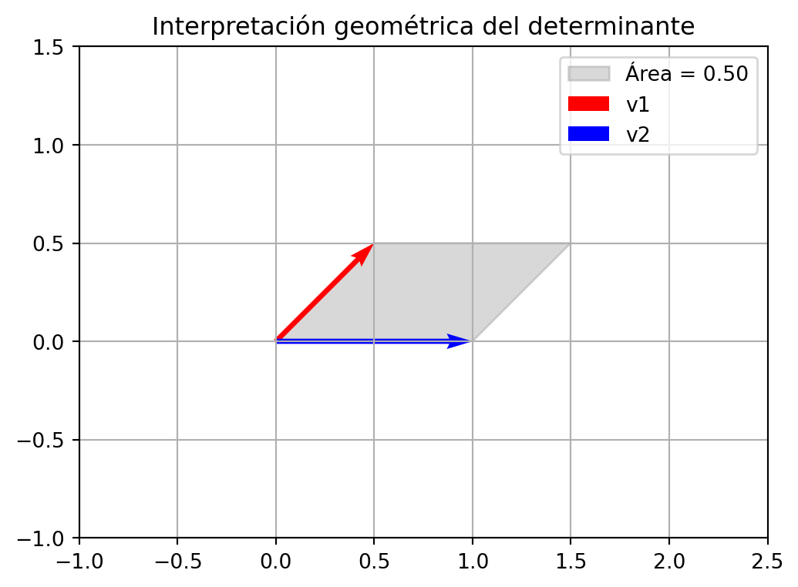

Matrices Solución de sistema de ecuaciones
Queremos encontrar dos números tales que sumados sean 45 y restados sean 21, para resolver este problema deberíamos plantear las incógnitas de la siguiente forma:
\(X:=\) número mayor
\(Y:=\) número menor
así debemos plantear el sistema de ecuaciones:
\[X+Y=45\] \[X-Y=21\]
Este sistema lo podemos resolver de la usando el método de sustitución, para ello despejamos \(X\) de la segunda ecuación:
\[X=21+Y\]
y sustituimos en la primera ecuación:
\[21+Y+Y=45\]
Ahora despejamos \(Y\):
\[2Y=24\]
\[Y=12\]
Sustituimos el valor de \(Y\) en la ecuación \(X=21+Y\):
\[X=21+12\]
\[X=33\]
Por lo tanto los números son 33 y 12.
Aunque, este es un camino para resolver el problema, también podemos resolverlo de forma matricial, para ello planteamos el sistema de ecuaciones de la siguiente forma:
\[\begin{bmatrix} 1 & 1 \\ 1 & -1 \\ \end{bmatrix} \begin{bmatrix} X \\ Y \\ \end{bmatrix} = \begin{bmatrix} 45 \\ 21 \\ \end{bmatrix} \]
De esta forma podemos definir la matriz \(A\) y el vector \(B\):
\[A=\begin{bmatrix} 1 & 1 \\ 1 & -1 \\ \end{bmatrix} \text{ y } B=\begin{bmatrix} 45 \\ 21 \\ \end{bmatrix} \]
Para encontrar la solución del sistema de ecuaciones \(AX=B\) debemos encontrar la matriz \(X\) que cumpla con la ecuación anterior, para ello multiplicamos ambos lados de la ecuación por la inversa de la matriz \(A\), donde la matriz inversa de \(A\) es:
\[A^{-1}=\begin{bmatrix} \frac{1}{2} & \frac{1}{2} \\ \frac{1}{2} & -\frac{1}{2} \\ \end{bmatrix} \] Comprueba que es la inversa de la matriz \(A\)
De esta forma tenemos que el sistema se puede escribir como: \[\begin{bmatrix} \frac{1}{2} & \frac{1}{2} \\ \frac{1}{2} & -\frac{1}{2} \\ \end{bmatrix}\begin{bmatrix} 1 & 1 \\ 1 & -1 \\ \end{bmatrix} \begin{bmatrix} X \\ Y \\ \end{bmatrix} = \begin{bmatrix} \frac{1}{2} & \frac{1}{2} \\ \frac{1}{2} & -\frac{1}{2} \\ \end{bmatrix}\begin{bmatrix} 45 \\ 21 \\ \end{bmatrix} \]
Así obtenemos que:
\[\begin{bmatrix} 1 & 0 \\ 0 & 1 \\ \end{bmatrix} \begin{bmatrix} X \\ Y \\ \end{bmatrix} = \begin{bmatrix} 33 \\ 12 \\ \end{bmatrix} \]
y
\[\begin{bmatrix} X \\ Y \\ \end{bmatrix} = \begin{bmatrix} 33 \\ 12 \\ \end{bmatrix} \]
Por lo tanto los números son 33 y 12, como lo habíamos encontrado anteriormente.
Independencia en la la columna de una matriz
La matriz \(A=\begin{bmatrix}a_{11} & a_{12}\\a_{21} & a_{22}\end{bmatrix}\), al multiplicar por el vector columna \(\begin{bmatrix}\alpha_1 \\ \alpha_2\end{bmatrix}\), obtenemos
\[\begin{bmatrix}a_{11} & a_{12}\\a_{21} & a_{22}\end{bmatrix}\begin{bmatrix}\alpha_1 \\ \alpha_2\end{bmatrix}=\begin{bmatrix}a_{11}\alpha_1+a_{12}\alpha_2\\a_{21}\alpha_1+a_{22}\alpha_2\end{bmatrix},\]
agrupando términos tenemos:
\[A\begin{bmatrix}\alpha_1 \\ \alpha_2\end{bmatrix}=\alpha_1\begin{bmatrix}a_{11}\\a_{21}\end{bmatrix}+\alpha_2\begin{bmatrix}a_{12}\\a_{22}\end{bmatrix}\]
De esta forma podemos ver que esta multiplicación es una combinación lineal de la s columnas de la matriz \(A\).
Vamos a analizar que sucede si la matriz \(A\) tiene columnas linealmente dependientes, para estudiar esto vamos a considerar el siguiente ejemplo
\[A=\begin{bmatrix}1 & 2\\2 & 4\end{bmatrix}\]
Note que la segunda columna es el doble de la primera columna, por lo tanto las columnas de la matriz \(A\) son linealmente dependientes.
Ahora si vamos a calcular la inversa de la matriz \(A\), con la formula que vimos anteriormente, obtenemos:
\[A^{-1}=\frac{1}{1\cdot 4-2\cdot 2}\begin{bmatrix}4 & -2\\-2 & 1\end{bmatrix}=\frac{1}{0}\begin{bmatrix}4 & -2\\-2 & 1\end{bmatrix}\]
Podemos ver que la inversa no existe. Ahora vamos a explorar que sucede si la matriz \(A\) tiene columnas linealmente independientes, para ello consideremos la matriz \(A=\begin{bmatrix}1 & 2\\3 & 4\end{bmatrix}\), en este caso las columnas de la matriz \(A\) son linealmente independientes.
Ahora vamos a calcular la inversa de la matriz \(A\), con la formula que vimos anteriormente, obtenemos:
\[A^{-1}=\frac{1}{1\cdot 4-2\cdot 3}\begin{bmatrix}4 & -2\\-3 & 1\end{bmatrix}=\frac{1}{-2}\begin{bmatrix}4 & -2\\-3 & 1\end{bmatrix}=\begin{bmatrix}-2 & 1\\1.5 & -0.5\end{bmatrix}\]
Por lo tanto la inversa de la matriz \(A\) existe.
Esto nos lleva al siguiente resultado:
Proposición Si la matriz \(A\) tiene columnas linealmente independientes, entonces la matriz \(A\) tiene inversa.
Proposición Si la matriz \(A\) de \(2\times 2\) tiene columnas linealmente independientes, el sistema \(Ax=b\) una única solución. ¿Cómo podemos justificar este resultado?
Para saber si una matriz tiene inversa vamos a introducir el siguiente concepto.
Determinantes
El determinante de una matriz \(A\) de dimensión \(2\times 2\) se denota por \(|A|\) y se define como:
\[|A|=a_{11}a_{22}-a_{12}a_{21}\]
Para la matriz \(A=\begin{bmatrix}1 & 2\\2 & 4\end{bmatrix}\), el determinante de la matriz \(A\) es:
\[|A|=1\cdot 4-2\cdot 2=0\]
Note que el determinante de una matriz cuadrada es igual a cero si las columnas de la matriz son linealmente dependientes.
La interpretación geométrica del determinante de una matriz \(A\) de dimensión \(2\times 2\) es que el determinante de la matriz \(A\) es igual al área del paralelogramo que se forma con los vectores columna de la matriz \(A\).
Ejemplo Veamos la interpretación geométrica del determinante de la matriz \(A=\begin{bmatrix}1/2 & 1/2\\1 & 0\end{bmatrix}\) note que el determinante de la matriz \(A\) es:
\[|A|=1/2\cdot 0-1/2\cdot 1=1/2\] gráficamente podemos ver que el área del paralelogramo es igual a 1/2.
Note que con esta definición podemos modificar la formula de la inversa de una matriz \(A\) de dimensión \(2\times 2\) como:
\[A^{-1}=\frac{1}{|A|}\begin{bmatrix}a_{22} & -a_{12}\\-a_{21} & a_{11}\end{bmatrix}\]
y podemos obtener la siguiente proposición:
Proposición Si el determinante de una matriz \(A\) de dimensión \(2\times 2\) es diferente de cero, entonces la matriz \(A\) tiene inversa.
Proposición Si el determinante de una matriz \(A\) de dimensión \(2\times 2\) es diferente de cero, entonces el sistema \(Ax=b\) tiene una única solución.
Proposición Si el determinante de una matriz \(A\) de dimensión \(2\times 2\) es diferente a cero, entonces \(A\) tiene columnas linealmente independientes.
Proposición Si el determinante de una matriz \(A\) de dimensión \(2\times 2\) es diferente a cero, entonces \(A\) tiene filas linealmente independientes.